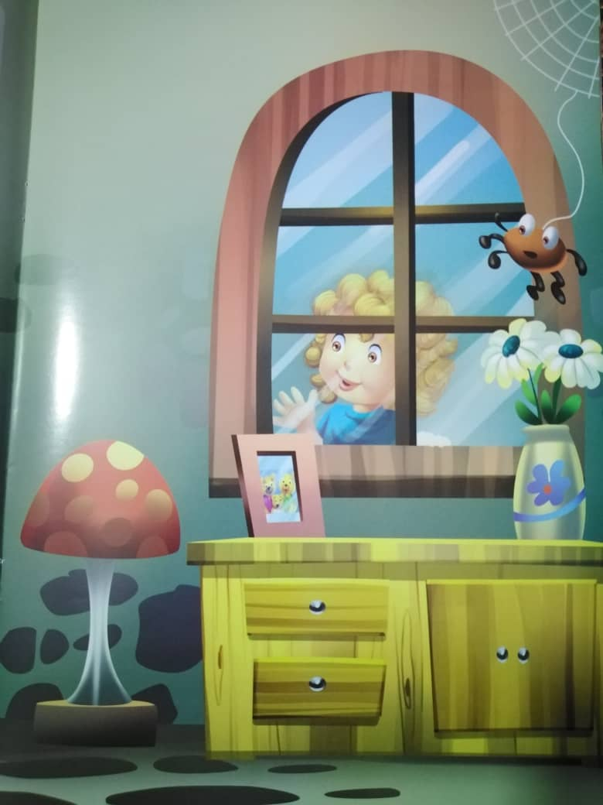
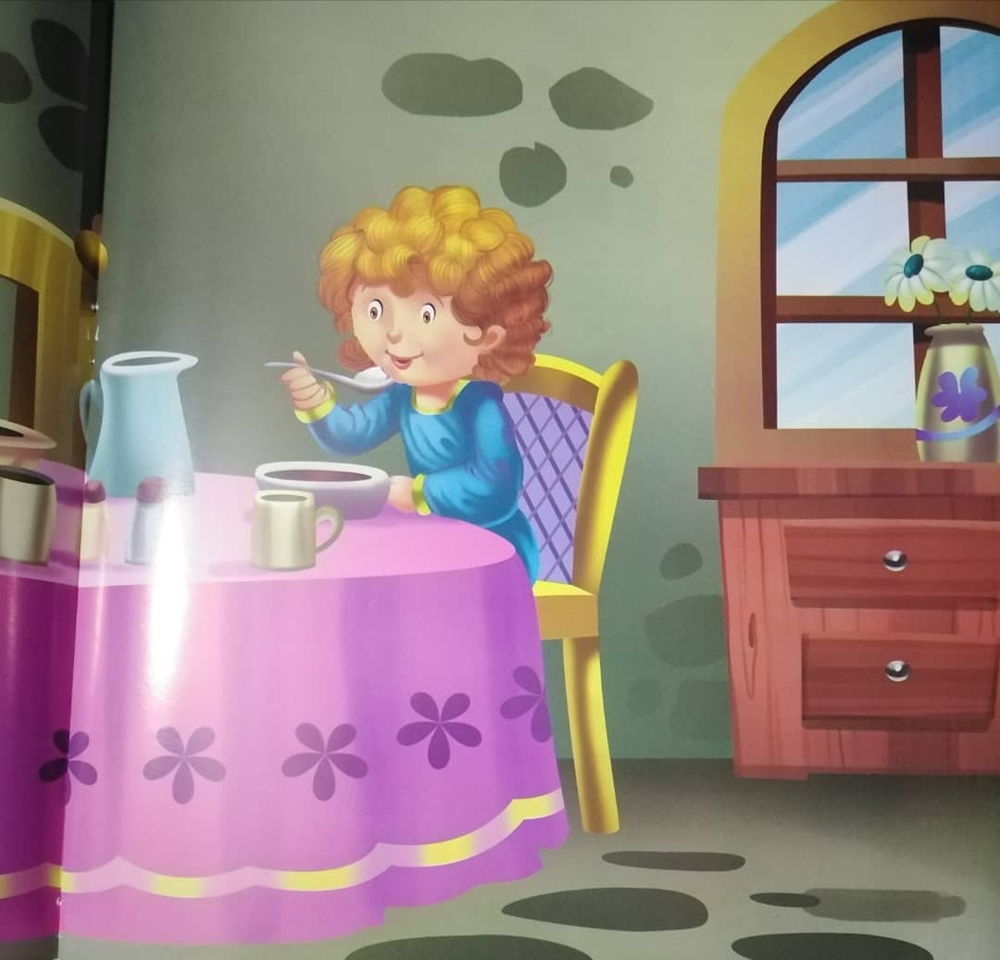
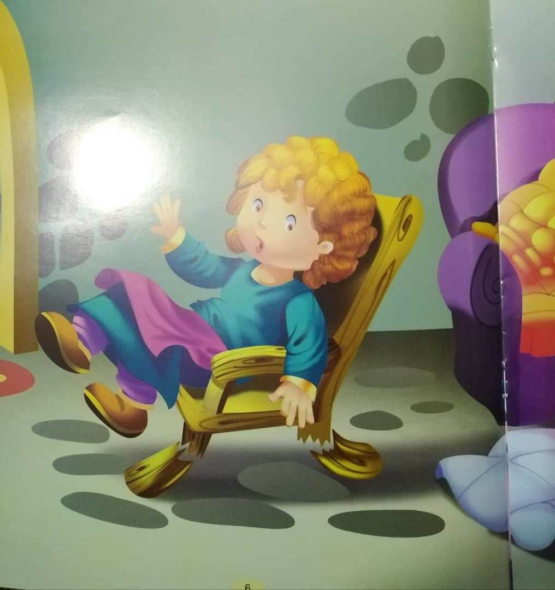
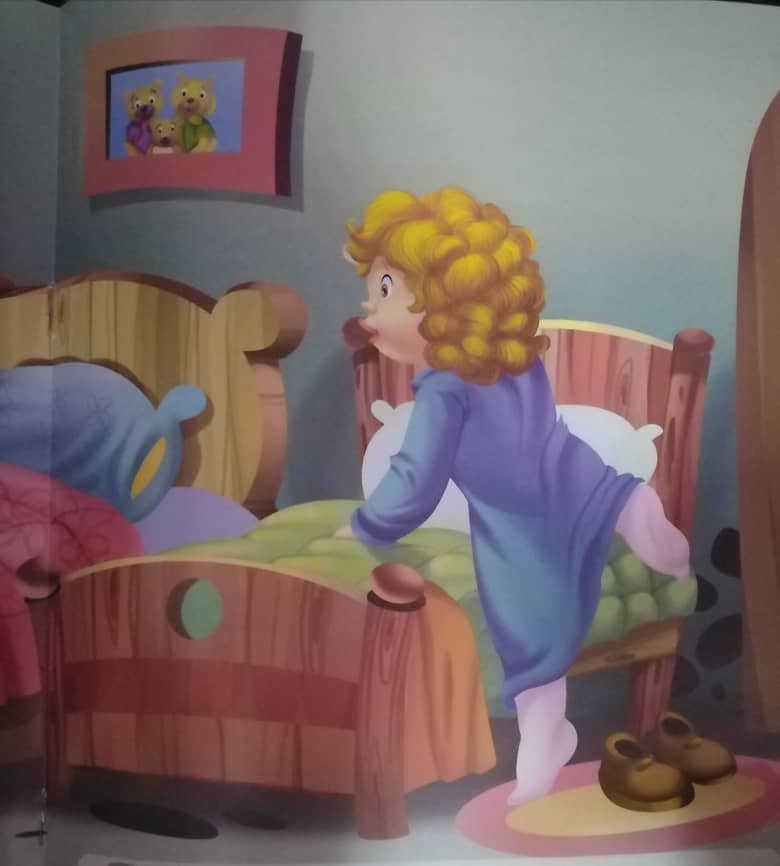
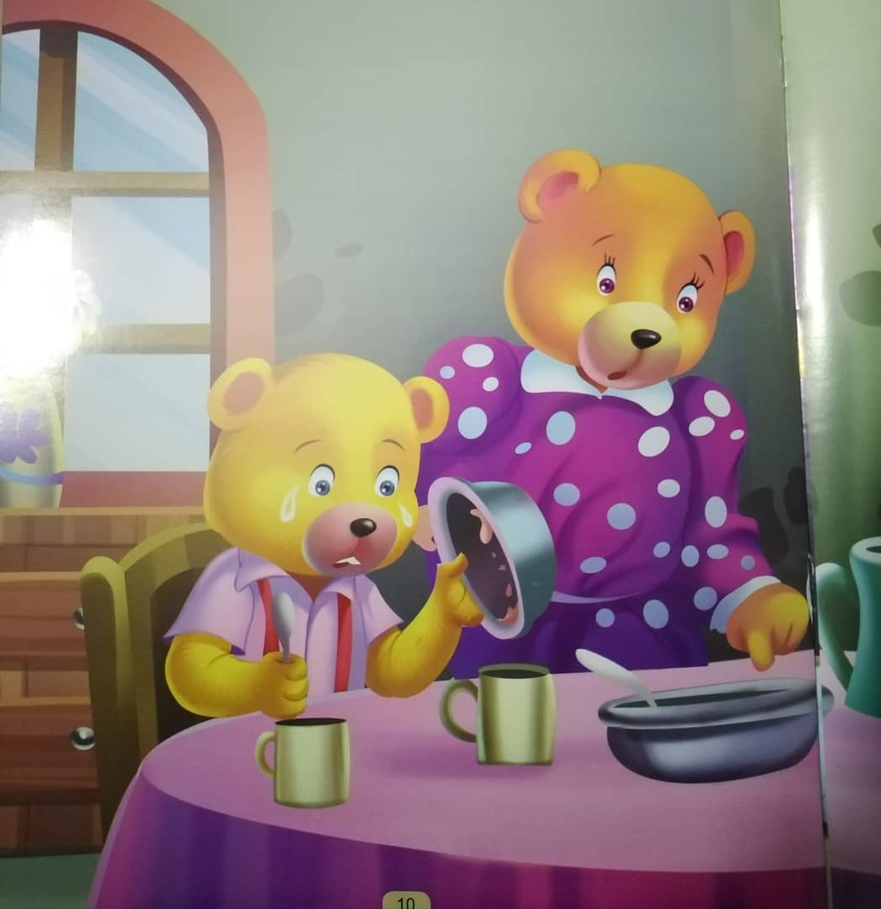
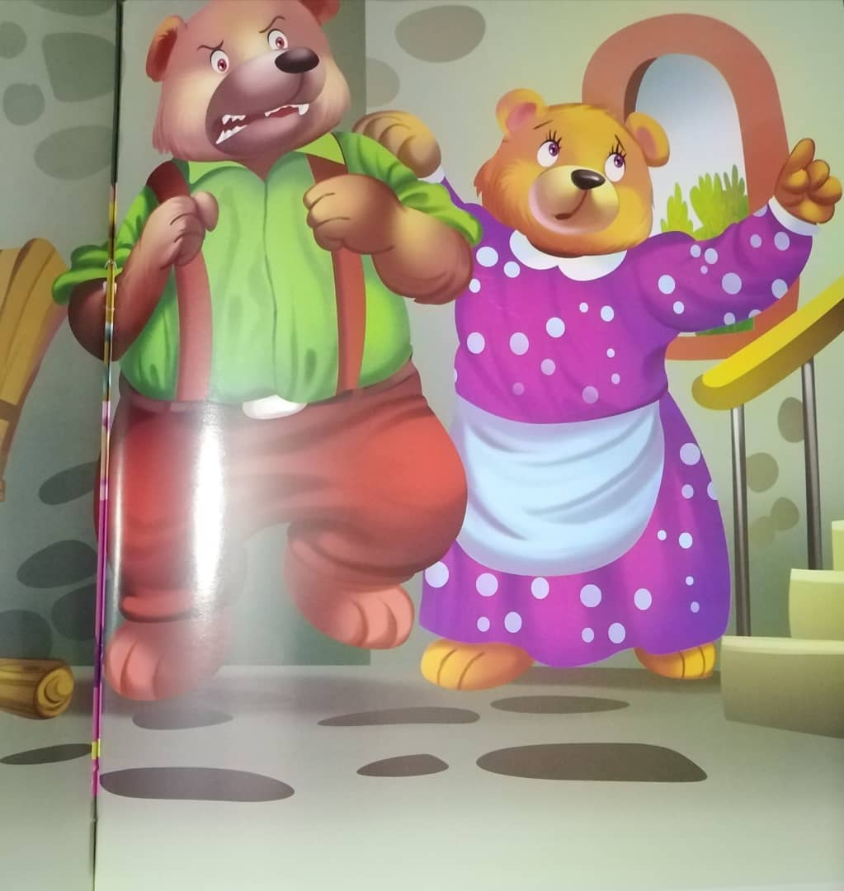
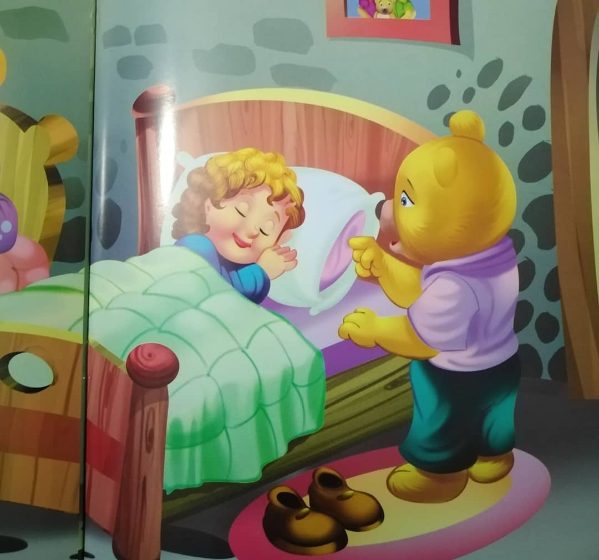
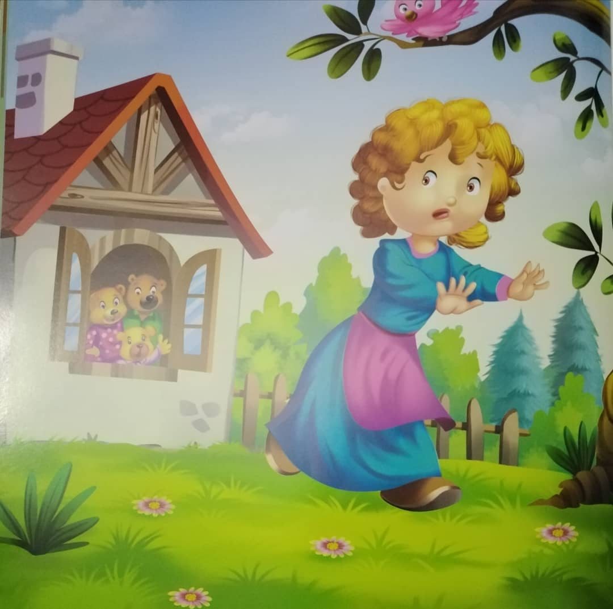

One day, a little girl named Goldilocks was playing near the forest.
She saw a pretty little cottage at a distance, and wondered, "What a lovely cottage! I wonder who lives here?".
She decided to visit it.
Goldilocks peeped in through the window.
"Anybody there?" she asked.
Nobody answered.
The room had toys and books.
Goldilocks was curious to see more.
The main door was not locked.
Goldilocks went inside.
She saw a dining table laid out with food.
Goldilocks was hungry.
'I don't think they will mind if I eat a little,' she tought.
Goldilocks tasted the porridge from the biggest bowl first.
It was too hot.
Then she tasted from the second bowl.
It was too cold.
But when she tasted from the third, the smallest bowl, the porridge was just right.
Goldilocks ate it all up!
Goldilocks felt tired.
She sat on a large chair.
It was too hard and too uncomfortable.
Then she sast on a medium - sized chair, but it was too soft and too comfortable.
She then saw a small chair and thought, 'This chair looks just perfect for me!' and sat on it.
CRRACK! The little chair broke!
It was too delicate!
Goldilocks was feeling sleepy by now.
"I should rest for a while," she said to herself.
So, she went upstairs into the bedroom.
She saw three beds of different sizes.
'Let me see which bed is the most comfortable,' she tought.
At first, Goldilocks sat on the biggest bed, but it was too hard.
Then, she sat on the medium - sized one.
But it was too soft.
Finally, she sat on the third bed, which was the smallest of all.
"This bed is just right!" she said happily, as she rested on it.
The cottage belonged to three bears, Papa bear, Mama bear and Baby bear who had gone out for a walk.
They returned hungry and sat down for breakfast.
But they were in for a suprise!
"Who has tasted my porridge?' growled Papa bear.
Mama bear exclaimed, "Someone has tasted my porridge too!" "BOO HOO "Someone has eaten up my porridge!" cried Baby bear.
Papa bear and Mama bear were surprised to see this.
"Someone has been in our house while we were away," said Papa bear, thoughtfully.
The bear family looked around but found no one.
"Someone has broken my chair!" Baby bear cried out loud from the living room.
"Let us look upstairs too," suggested Mama bear.
They went up to their bedroom.
Finding his bed a little untidy, Papa bear growled, "Somebody has sat on my bed!"
The next moment, Mama bear exclaimed, "well, someone has been on my bed too!"
Baby bear cried out, "Somebody is still sleeping on my bed!"
Mama bear and Papa bear quickly went towards Baby bear's bed and saw Goldilocks fast asleep
The three bears stood around the bed.
"So, this is the little girl who has eaten our porridge and broken our chair!" exclaimed Papa bear.
Just then, Goldilocks woke up and saw the three bears looking down at her
She was frightened indeed!
The next moment, she jumped out of the bed, and ran out of the cottage.
Goldilocks did not stop running till she reached her home.
She promised herself, never to enter anyone's house uninvited!